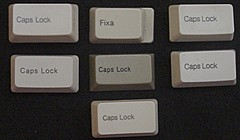
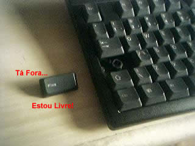

Esta página reúne todos os textos técnicos que fiz. São artigos, guias, tutoriais, HOWTOs, slides, apostilas e livros. Alguns foram publicados em revistas de circulação nacional, outros foram publicados no meu site, outros são material dos cursos que ministrei. Todos têm seus "fontes" no formato do txt2tags, inclusive os livros e slides.
Todos estes textos são livres para serem copiados, somente peço que mantenha as informações de autoria (meu nome) e indique a sua localização original (o link). As exceções são:
- O conteúdo da apostila Programação Profissional em Shell é fechado.
- O conteúdo do livro Expressões Regulares está online mas possui Direitos Autorais.
Procurando por algum documento específico? Confira a lista:
- Resumão: Linha do Tempo
- Livros
- Tutoriais, Guias, Textos
- Material de Cursos
- Documentação de Programas
- Artigos na Revista Linux Magazine
- Artigos na Revista do Linux (RdL)
- RdL #03 - O Poder do Modo Texto
- RdL #03 - Expressões Regulares - Parte 1
- RdL #04 - Vi, Vim e Venci
- RdL #04 - Áreas Compartilhadas
- RdL #07 - Expressões Regulares - Parte 2
- RdL #09 - Coluna do Aurelio I - Introdução
- RdL #10 - Coluna do Aurelio II - ICQ
- RdL #11 - Coluna do Aurelio III - zgv/ImageMagick
- RdL #47 - Cygwin - O Linux no Windows (matéria de capa)
- RdL #49 - Pulando com o Vim
- Coluna do Aurelio
- Coluna 01: Introdução
- Coluna 02: ICQ
- Coluna 03: Zgv/ImageMagick — Manipulação de imagens
- Coluna 04: Pine — E-mail na tela preta
- Coluna 05: Jogos — Uma viagem ao mundo da diversão
- Coluna 06: Arte Ascii — Artistas do teclado
- Coluna 07: Screen — Janelizando o modo texto (parte 1)
- Coluna 08: Screen — Janelizando o modo texto (parte 2)
- Coluna 09: Vim — Um vimrc diferente
- Coluna 10: Mpage — Impressão ágil em PostScript
- Coluna 11: Caracteres de Controle — Não fuja, domine-os
- Coluna 12: Lynx — Navegação turbinada
Resumão: Linha do Tempo
01 Dez 1999 |
Sem Mouse HOWTO |
01 Mar 2000 |
RdL #03 - O Poder do Modo Texto |
01 Mar 2000 |
RdL #03 - Expressões Regulares - Parte 1 |
01 Abr 2000 |
RdL #04 - VI, Vim e venci |
01 Abr 2000 |
RdL #04 - Áreas Compartilhadas |
23 Jun 2000 |
Fanatismo Digital - A Guerra dos Editores |
01 Jul 2000 |
RdL #07 - Expressões Regulares - Parte 2 |
31 Jul 2000 |
Coluna 01 - Introdução |
25 Ago 2000 |
Sed HOWTO |
30 Ago 2000 |
Coluna 02 - ICQ |
01 Set 2000 |
RdL #09 - Coluna do Aurelio I - Introdução |
21 Set 2000 |
Coluna 03 - Zgv/ImageMagick — Manipulação de imagens |
01 Out 2000 |
RdL #10 - Coluna do Aurelio II - ICQ |
01 Nov 2000 |
RdL #11 - Coluna do Aurelio III - zgv/ImageMagick |
02 Dez 2000 |
Coluna 04 - Pine — E-mail na tela preta |
04 Jan 2001 |
Coluna 05 - Jogos — Uma viagem ao mundo da diversão |
22 Fev 2001 |
Coluna 06 - Arte Ascii — Artistas do teclado |
12 Abr 2001 |
Coluna 07 - Screen — Janelizando o modo texto (parte 1) |
10 Mai 2001 |
Coluna 08 - Screen — Janelizando o modo texto (parte 2) |
28 Jun 2001 |
Coluna 09 - Vim — Um vimrc diferente |
31 Jul 2001 |
Livro Expressões Regulares - Guia de Consulta Rápida |
13 Ago 2001 |
Coluna 10 - Mpage — Impressão ágil em PostScript |
27 Ago 2001 |
Coluna 11 - Caracteres de Controle — Não fuja, domine-os |
09 Nov 2001 |
Coluna 12 - Lynx — Navegação turbinada |
25 Jun 2003 |
Dialog --tudo |
09 Jul 2003 |
Canivete Suíço do Shell |
30 Jul 2003 |
Apostila Programação Profissional em Shell Script |
01 Nov 2003 |
RdL #47 - Cygwin - O Linux no Windows (matéria de capa) |
10 Dez 2003 |
Apostila Conhecendo as Expressões Regulares |
12 Dez 2003 |
Software Livre - Experiências de um Desenvolvedor (slides) |
01 Jan 2004 |
RdL #49 - Pulando com o Vim |
19 Abr 2004 |
Editor VI - Guia de Referência |
24 Abr 2004 |
Apostila Introdução ao Shell Script |
31 Ago 2004 |
Editando arquivos do OpenOffice.org no Vim |
01 Out 2004 |
Linux Magazine #02 - Seleção VI-sual |
17 Nov 2004 |
Livro Dominando o Sed |
15 Jul 2005 |
AppleScript for Python Programmers |
10 Nov 2006 |
Livro Expressões Regulares - Uma abordagem divertida |
31 Ago 2007 |
Vídeo-tutorial de PyObjC |
04 Abr 2008 |
Livro Shell Script Profissional |
Obs.: No caso de documentos versionados, a data indica a primeira versão.
Livros
Shell Script Profissional
- Descrição
- Livro de 480 páginas, é uma bíblia completa sobre shell, que ensina a fazer programas de qualidade profissional: código legível, portabilidade e manutenção futura. Explica ainda opções de linha de comando, arquivo de configuração, banco de dados, interface amigável ao usuário, CGI, ferramentas do sistema, expressões regulares e caracteres de controle. Tem também um apêndice que faz uma análise detalhada no código das Funções ZZ. O livro foi lançado em 4 de Abril de 2008 e está à venda na maioria das livrarias do país por cerca de 85 reais. ISBN: 978-85-7522-152-5
- História
- Leia no meu blog o "Making Of" do livro e o relato da tarde de autógrafos no FISL 9.0.
- Status
- O livro está em sua primeira edição. Saiba mais...
Expressões Regulares - Uma abordagem divertida
- Descrição
- A evolução do guia de consulta. Agora em formato de livro, fontes maiores, tabelas bonitas e ilustrações, contando com um personagem que aprende e testa os exemplos ao decorrer do texto. Usando uma linguagem leve e descontraída, o assunto é explicado de maneira didática e divertida. Esta abordagem, incomum de se encontrar em literaturas técnicas, foi muito elogiada pelos leitores. ISBN: 978-85-7522-337-6.
- História
-
Leia no meu blog o "Making Of" da 1ª edição.
Leia no meu blog o "Making Of" da 2ª edição.
Leia no meu blog o "Making Of" da 3ª edição.
Leia no meu blog o "Making Of" da 4ª edição. - Status
-
Em 2006 foi lançada a primeira edição deste livro.
Em 2008 foi lançada a segunda edição deste livro.
Em 2009 foi lançada a terceira edição deste livro.
Em 2012 foi lançada a quarta edição deste livro.
Expressões Regulares - Guia de Consulta Rápida
http://aurelio.net/regex/guia/
- Descrição
- Livro de 96 páginas, escrito em uma linguagem descontraída e didática, que leva o leitor a uma viagem ao mundo das Expressões Regulares. Primeira publicação nacional sobre o assunto, e uma das poucas existentes no mundo. Tem o formato "de bolso", fácil de carregar. Também pode ser consultado integral e gratuitamente na Internet. ISBN: 85-7522-011-X.
- História
- Conectiva. Eu lá tranqüilo trabalhando, quando surge um assunto sobre Expressões Regulares. Papo vem, papo vai e o meu chefe Wanderlei Cavassin acende o pavio: "Você manja disso, por que não escreve um livro?" Em seguida ele me mostrou o site da Editora Novatec e apontou para o link "Procuramos autores". Aí não teve mais volta. No mesmo dia mandei um e-mail para a editora e o Rubens (Editor/Dono) imediatamente me telefonou dizendo que tinha interesse em publicar um livro sobre o assunto. Dois meses depois do primeiro contato, o texto final estava indo para a gráfica. O livro foi lançado em 31 de Julho de 2001, na feira Fenasoft.
- Status
- Esgotado em Dezembro de 2006. A 1ª edição teve uma tiragem de 3.000 exemplares. Foram cinco anos e meio, em um ritmo lento porém constante, eram vendidos cerca de 40 exemplares por mês (mais de um por dia!). Seu sucessor é o livro Expressões Regulares - Uma abordagem divertida, lançado em Novembro de 2006. Veja a opinião dos leitores do guia.
Dominando o Sed
- Descrição
- Um livro inacabado sobre Sed, disponível gratuitamente em PDF. Ele cobre instalação, todos os detalhes dos endereços, como lidar com arquivos, quebras de linha, maiúsculas e minúsculas, contando com vários exemplos didáticos com que podem ser testados em sua máquina.
- História
- Em março de 2002 comecei a trabalhar em um livro sobre Sed. Peguei o Sed HOWTO como base e comecei a completá-lo, escrever mais tópicos, definir um índice, definir um foco. Tudo muito devagar e com muita calma, escrevendo em média apenas uma vez por semana, durante cerca de 2 horas. Os capítulos e tópicos foram surgindo naturalmente e o conteúdo foi tomando forma de um livro. Em outubro de 2002, já com aproximadamente 60% do livro escrito, resolvi tornar o projeto público e chamar colaboradores. Após um anúncio na lista sed-br e convites em particular para amigos e colegas escritores, foi formado um time de 11 pessoas que ajudaram a revisar o trecho já escrito. Mas desde então, nenhum conteúdo novo foi escrito, o livro estagnou. Em novembro de 2005, decidido que eu realmente não iria mais continuá-lo, resolvi lançá-lo inacabado mesmo, para não perder o trabalho já feito.
- Status
- Versão inacabada, porém final.
Tutoriais, Guias, Textos
Canivete Suíço do Shell
http://aurelio.net/shell/canivete/
- Descrição
- Documento de apenas uma página HTML com um resumão de Shell e os comandos principais do sistema. São várias tabelas que resumem operadores, opções, conceitos, dicas e listagens. Nada de texto, só tabelas. Bom para guardar, imprimir, ter sempre à mão para tirar dúvidas.
- História
- Este documento eu fiz para mim mesmo, pois estava cansado de sempre ter que recorrer aos --help e manpages dos comandos para lembrar qual mesmo aquela opção que fazia tal coisa? Ou pior, ter que fazer um "man bash" e tentar achar algo naquela selva. Juntei tudo em uma única página, no melhor estilo Guia de Consulta Rápida e divulguei. O pessoal gostou bastante e inclusive sugeriram conteúdo novo. Assim o "canivete" cresceu mais ainda e se tornou uma referência na área.
- Status
- O documento já está bem maduro, com bastante conteúdo. Eventualmente são feitas atualizações para corrigir erros e adicionar alguma tabela nova. Há também uma versão em PDF do canivete, boa para imprimir.
Dialog --tudo
http://aurelio.net/shell/dialog/
- Descrição
- Documento completo sobre o Dialog, o programa que faz interfaces "gráficas" no modo texto, com botões, menus e caixas de texto, interagindo com o Shell. Serve de tutorial para os iniciantes, com bastante imagens e explicações básicas. Serve de guia de referência para os experientes, listando todas as opções, telas e funcionalidades. Também contém exemplos funcionais de scripts completos.
- História
- O Dialog é a chave para se fazer scripts em Shell utilizáveis por leigos em informática. Com ele, os programas do modo texto ficam com cara de programas gráficos, tendo menus e botões. Mas era incrível como mesmo sendo um programa antigo, muito útil e bem conhecido, não existia nenhuma documentação dele em português. Era muito freqüente aparecer na lista de shell-script mensagens do tipo: "Tem documentação do Dialog em português?". Cansado de ver essa mensagem sempre reaparecendo, resolvi escrever um documento completo e definitivo. O resultado é um tutorial com bastante imagens para os iniciantes, que gradualmente vai ficando complexo até chegar em scripts completos com várias telas.
- Status
- O documento já está bem completo, o considero uma documentação definitiva. Ele é atualizado esporadicamente quando o próprio Dialog muda (versão nova, opções novas) ou quando tenho mais exemplos de scripts para colocar.
Sed HOWTO
http://aurelio.net/sed/sed-HOWTO/ 
- Descrição
- Este documento se propõe a ser um tutorial e um guia de consulta de Sed ao mesmo tempo. Ele apresenta o Sed aos poucos, explicando seu funcionamento, mas também conta com dicas avançadas. Este guia é exclusivo de Sed, as Expressões Regulares não são abordadas.
- História
- Esse documento é o resultado do meu difícil aprendizado do programa Sed, uma ferramenta de edição automática de texto através de scripts. Desde a primeira vez que o usei achei fantástico por ser tão poderoso e tão intimidador. Apesar do programa ter vários comandos, todos os técnicos que eu conhecia só sabiam usar o comando básico "s/isso/aquilo/g". Início de 1999, resolvi aprender os outros comandos a acabar com o mistério. Li diversas vezes a página de manual (manpage) do Sed e ela só embaralhava mais a cabeça. Achei alguns documentos em inglês na Internet mas eram muito avançados. Passei várias noites em casa tentando aprender por tentativa e erro e aos poucos fui captando sua filosofia e as trevas foram clareando. Aprendi os comandos, os registradores e finalmente comecei a me sentir à vontade. Para consolidar o conhecimento recém adquirido, escrevi um programa conversor de texto para SGML que usava vários comando Sed dentro de um script Shell. E assim, perdi o medo do Sed. Finalmente comecei a entender as respostas dadas na lista gringa do programa, passando de mero espectador perdido a participante ativo. Ali aprendi as técnicas avançadas e as diferenças entre as versões do programa. Essa evolução foi registrada: o programa conversor foi melhorado e virou um script em Sed. Todo este esforço não poderia passar em branco e ficar só pra mim. Eu precisava difundir o uso do Sed e o seu poder. O primeiro passo foi criar a lista de discussão sed-br e os usuários foram aparecendo. Com a lista pude identificar as dúvidas mais comuns de quem estava começando e comecei a juntar dicas para um documento maior. Escrevendo um pouco por dia, durante ou no fim do expediente, depois de alguns meses consegui lançar a primeira versão do HOWTO, quase dois anos depois do início de toda essa odisséia.
- Status
- O documento foi divulgado, lido, recebi sugestões de melhorias e hoje ele se encontra na versão 0.6. Ele continua o documento mais completo sobre Sed em português. Mas há outros documentos complementares excelentes, escritos ou traduzidos por usuários. Confira-os no portal do Sed. Este HOWTO ajuda o iniciante a se achar, mas ainda está longe de ser algo tão completo quanto eu gostaria. É preciso um livro inteiro sobre o Sed. Eu comecei, mas atualmente ele está parado. O HOWTO recebe atualizações esporádicas com correções, mas dificilmente conteúdo novo. Preciso resolver esse dilema do HOWTO versus livro.
Vídeo-tutorial de PyObjC
http://aurelio.net/mac/dev/tutorial-pyobjc/
- Descrição
- Este vídeo-tutorial é um guia completo para iniciar em PyObjC, a ponte entre Python e Cocoa, a poderosa API usada pelos aplicativos do Mac OS X. Leia o guia e veja o vídeo de demonstração.
- História
- Fiz este tutorial para uma palestra que ministrei em Joinville, na PyCon Brasil [3]. Seu título foi "Tem cobra dentro da maçã - Como fazer um aplicativo Cocoa programando em Python (PyObjC)". O objetivo foi mostrar como é fácil fazer um programa nativo para Mac, utilizando Python. A palestra foi filmada e o vídeo também está disponível, melhorando muito o aprendizado do tutorial. São 34 minutos de demonstração, seguindo os passos descritos no tutorial.
- Status
- Versão final.
AppleScript for Python Programmers
http://aurelio.net/doc/as4pp.html
- Descrição
- Um comparativo entre duas linguagens, útil para programadores Python que queiram aprender AppleScript, em inglês.
- História
- Acho mais fácil de assimilar algo novo quando se compara com algo já conhecido. Como eu já programava em Python e estava aprendendo AppleScript, fui anotando os comandos novos aprendidos, comparando-os com os comandos Python já conhecidos. O resultado é uma tabelona que fica auto-explicativa para programadores Python. Fiz em inglês porque só conheço mais um brasileiro que programa em AppleScript. Se você é o terceiro, entre em contato!
- Status
- Versão quase final, vou adicionar mais dados se necessário.
Editando arquivos do OpenOffice.org no Vim
http://aurelio.net/vim/ooo-vi.html
- Descrição
- Um artigo que analisa a estrutura de um arquivo .SXW (arquivo do Writer do OpenOffice.org) e ensina como editá-lo utilizando um editor de textos comum como o Vim.
- História
- Quando eu estava escrevendo uma apostila no OpenOffice.org para a linha de treinamento da Conectiva, surgiu a dúvida se existiria alguma maneira de fazer edições posteriores de modo automático (batch), como por exemplo transformar todas as imagens para preto e branco. Descobri que o arquivo .SXW na verdade é um ZIP com arquivos XML e subdiretórios, e aí acabou o mistério. Fiz vários testes e esse artigo é a conclusão deles.
- Status
- Versão final.
Programas Compatíveis com Python v1.5
http://www.python.org.br/wiki/ProgramasCompativeisV15
- Descrição
- Um documento rápido dando as dicas de como codificar em Python de maneira conservadora, mantendo compatibilidade com a versão antiga da linguagem, a v1.5, ainda em uso.
- Status
- Versão final.
Sem Mouse HOWTO
http://aurelio.net/doc/sem-mouse-HOWTO.html
- Descrição
- Este documento dá dicas de como usar um sistema Linux sem o mouse, apenas com o teclado. São explicados vários truques para Copiar & Colar textos entre programas, além de dicas de uso do programa "screen". Também é ensinado como movimentar o cursor com o teclado no XFree86 e nos gerenciadores fvwm e fvwm2.
- História
- Escrevi este documento em inglês em 1999, mas ficou inacabado e acabei perdendo-o nos confins do meu $HOME. Em Novembro de 2003 o reencontrei, traduzi para português e terminei as partes que faltavam. Na época eu não usava mouse e fui juntando essas dicas, que eu usava no dia-a-dia.
- Status
- Versão final.
Você realmente usa a tecla CAPS LOCK?
http://aurelio.net/doc/CAPSLOCK.txt
- Descrição
-  Um guia completo de como diminuir seu estresse e tornar a sua vida mais tranqüila desabilitando (ou removendo fisicamente) a tecla Caps Lock do teclado.
- História
- Não faço a menor idéia de quando escrevi isso, foi entre 1999 e 2001. Foi depois de um tempo de eu ter arrancado a minha tecla e ter conferido que era uma ótima idéia. Dentro da Conectiva foram vários os funcionários que aderiram à campanha e me doaram suas teclas (vide foto). Até hoje ainda recebo e-mails esporádicos de pessoas que leram este documento e "viram a luz", arrancando a tecla maldita. Alguns ainda me mandam a foto. Mande a sua!
|  |  |
| Claudio (TuxUnix) | Apoena Machado Cunha |
| Marcelo Miurrause | |
Que tal um pouco de ação? Veja esse vídeo do @codexico, que registrou o vôo de sua tecla, em homenagem ao CAPS LOCK DAY de 2010:
- Status
- Versão final.
Fanatismo Digital - A Guerra dos Editores
http://aurelio.net/doc/guerra-editores.html
- Descrição
- Análise do resultado de uma pesquisa antropológica feita em Junho de 2000 sobre a paixão e fanatismo que profissionais de informática nutrem por seu editor de textos. Em outras palavras: uma análise sobre a "guerra" entre usuários de VI e Emacs.
- História
- Terminado o curso de Informática na faculdade, fiz vestibular novamente e cursei Ciências Sociais na UFPR. Numa aula de Antropologia, foi pedido para que os alunos fizessem uma "Pesquisa Antropológica" completa, que consistia na escolha de um grupo social, entrevistas e análise dos resultados. Resolvi fazer uma pesquisa com um tema nerd. Toda a metodologia e análise foi antropológica, mas o tema foi a guerra entre usuários de VI e Emacs. "Guerra" de piadinhas e sacanagens, claro. O grupo investigado foram os funcionários da Conectiva, que responderam um extenso formulário. A nota obtida com a análise foi 90 (uau!).
- Status
- Versão final.
Material de Cursos
Apostila Programação Profissional em Shell Script
http://aurelio.net/shell/apostila/
Apostila com 114 páginas (quase um livro!) que fiz para ministrar um curso de Shell Avançado de 40 horas em 2003. Terminado o curso houve interesse de terceiros em adquirir o material, então estou vendendo essa apostila por 20 reais (em PDF).
Nela estão informações valiosas para pessoas que trabalham com Shell ou que pretendem fazer programas complexos na linguagem. O conteúdo aborda vários tópicos relacionados a programação, direcionados ao Shell. Comentários, código limpo, banco de dados, CGI e interface com o usuário são alguns dos assuntos explicados. Em 2008 essa apostila virou um livro.
Apostila Introdução ao Shell Script
http://aurelio.net/curso/material/apostila-shell-intro.pdf
Apostila de 22 páginas, com uma abordagem rápida e direta sobre como fazer scripts em Shell. Útil para quem já usa o UNIX/Linux na linha de comando e quer começar a fazer alguns scripts para automatizar tarefas.
Apostila Conhecendo as Expressões Regulares
http://aurelio.net/regex/apostila-conhecendo-regex.pdf
Apostila introdutória sobre Expressões Regulares, que apresenta o conceito e explora todos os metacaracteres básicos, um a um e de maneira sequencial. A explicação se dá por exemplos que podem (devem) ser executados pelo leitor na linha de comando. Boa para quem nem faz idéia do que sejam as expressões e quer aprender a usá-las.
Editor VI - Guia de Referência
http://aurelio.net/curso/material/vim-ref.html
Material de apoio utilizado no meu curso de VI. Mistura tabelas com descrição de comandos e procedimentos prontos para executar, servindo de referência rápida. É apenas uma página, útil para imprimir e deixar ao alcance da mão.
Software Livre - Experiências de um Desenvolvedor (slides)
http://aurelio.net/curso/material/desenvolvedor/
Todos os 44 slides da palestra que conta a minha experiência de mais de 4 anos produzindo e lançado softwares livres. É abordado todo o ciclo de desenvolvimento de um software, que engloba: a concepção da idéia, o planejamento prévio com escolha de linguagem/interface/plataforma, a codificação, a documentação, a suíte de testes, o empacotamento, o lançamento, a manutenção, o marketing e o trato com os usuários.
Alguns itens presentes: nome, idioma, versionamento, distribuição, Changelog, anúncios, divulgação, público-alvo, agradecimentos, trabalho colaborativo, instalador, homepage, logo, lista de discussão, comunidade, Freshmeat, SourceForge, CVS, bugs, suporte, melhoramentos, ambiente, requisitos, delegação de tarefas e planejamento futuro.
Documentação de Programas
Além de escrever dicas e tutoriais sobre os programas dos outros, também tenho meus próprios programas e sou responsável pela documentação deles. A maioria dos programadores odeia documentar suas criações, mas eu acho divertido &:)
O próprio site do programa é a sua documentação principal, servindo de vitrine para angariar usuários novos e apontar direções para os iniciantes seguirem. Os links imprescindíveis são "Download" e "Screenshots". Um livro de visitas também é recomendado para que os próprios usuários ajudem a fazer o marketing e apontar suas vantagens.
Eu faço o site e escrevo toda a documentação de meus programas, em inglês e português. Alguns estão em apenas uma língua. No txt2tags alguns documentos foram traduzidos para o português por usuários. Alguns documentos também foram traduzidos para outras línguas por usuários estrangeiros.
A seguir vou listar apenas os documentos que merecem alguma citação por suas características. O texto que os acompanha não é uma descrição de seu conteúdo, mas sim da forma como foram pensados e organizados, bem como seus propósitos.
txt2tags
- http://txt2tags.org/pt/markup-pt.html (português)
- Demonstração: Uma única página que faz um resumo de todas as marcas usadas pelo programa, lado a lado com o seu resultado convertido para HTML. Serve como uma apresentação rápida e completa da sintaxe das marcas. Também pode ser impresso e servir de guia de consulta rápida. A vantagem desse formato é que com pouco texto se consegue dizer muito, além de demonstrar o programa em ação.
- http://txt2tags.org/pt/../userguide/ (inglês)
- Guia do Usuário: Um documento extenso e completo, escrito em linguagem formal e dividido por tópicos, como em um livro. É abrangente, cobrindo desde a instalação até uso avançado, documentando todas as funcionalidades do programa. Este é o documento mestre do programa, os outros sintetizam ou apresentam de maneira diferente o que já está aqui. Também é disponibilizado como PDF para poder ser impresso e consultado.
- http://txt2tags.org/pt/../writing-book.html (inglês)
- Writing Books With Txt2tags: Inspirado pela adoção do programa como ferramenta de produção de um livro técnico estrangeiro, escrevi este documento para apontar as vantagens de se usar o txt2tags como formato original do texto de um livro. Ele tem um forte apelo visual com um CSS que tenta imitar a aparência de um livro. Tem uma linguagem sucinta e formal, passando sobriedade.
txt2regex
- http://aurelio.net/txt2regex//manpage.html (inglês)
- Página de manual: O formato padrão de documentação de programas no UNIX/Linux, que geralmente serve para listar todas as opções de linha de comando, acompanhadas de uma descrição sucinta. Como este é um programa simples e de interface interativa, esta é a única documentação e é suficiente.
sedsed
- http://aurelio.net/sedsed/ (inglês)
- Site tudo-em-um: Aqui uma abordagem diferente. A página principal do site do programa centraliza várias informações, eliminando a necessidade de documentação extra. Na página estão os exemplos de uso (que já abrigam os screenshots), as opções de linha de comando (--help), Changelog e exemplos de uso com outros programas conhecidos (credibilidade).
Funções ZZ
- http://funcoeszz.net (português)
- Site tudo-em-um: Segue a mesma filosofia do programa anterior de toda a documentação ser centralizada no site. Como conta com a contribuição ativa de vários usuários, a seção de Agradecimentos também está no site. Cada tópico tem um nome (âncora), para serem possíveis links diretos, como "#screenshot" por exemplo.
RAC
- http://aurelio.net/rac/info/tutorial/ (português)
- Tutorial: Um passo-a-passo que serve de apresentação dos conceitos e uso básico do programa. As letras são grandes, há pouco texto em cada tela e a leitura toma poucos minutos. A idéia é o leitor aprender de forma gradual e no final estar com vontade de experimentar o programa. O fato de obrigatoriamente ter que clicar e passar por várias páginas serve para prender sua atenção e evitar a "passada rápida de olhos".
- http://aurelio.net/rac/info/emu.html (português)
- Tabela de Emulação: Visa o aprendizado por associação, onde são mostrados comandos equivalentes a aqueles que o usuário já domina. Por já conhecer o resultado esperado, o usuário pode testá-los em sua máquina e certificar-se que o programa funciona. Gera uma empatia inicial e satisfação pela familiaridade.
Artigos na Revista Linux Magazine
Com o encerramento da Revista do Linux em Janeiro de 2004, ficou um buraco na mercado nacional de publicações dedicada ao Linux. Meses depois apareceu a revista Linux Magazine, uma revista alemã que também é publicada em outros países. A versão brasileira tem parte de seu conteúdo traduzido de artigos estrangeiros e outra parte são artigos feitos aqui.
Antes de sair o primeiro número, o editor Rafael Peregrino veio pessoalmente em Curitiba me mostrar a proposta da revista e me convidou para ser colaborador. Topei!

LinuxMag #02 - Seleção VI-sual
http://aurelio.net/vim/selecao-vi-sual.html
PDF original: site da revista, cópia local
Presente nas páginas 82 e 83 da revista. Este artigo dá várias dicas de uso do modo visual do Vim (VI). O modo visual serve para selecionar textos, podendo ser feito orientado a caracteres, linhas ou colunas. Uma vez selecionado, o texto pode ser recortado, copiado ou alterado. O artigo vai fundo e demonstra técnicas avançadas na seleção vertical (de colunas).
Artigos na Revista do Linux (RdL)
A Revista do Linux era editada pela Conectiva e foi a maior revista sobre Linux do mercado nacional, com circulação mensal. A sua primeira edição foi lançada em Janeiro de 2000 e sua saideira (#49) em Janeiro de 2004.
Escrevi vários artigos para a revista durante todo o ano de 2000, o que foi importantíssimo para despertar e desenvolver a minha escrita técnica com sabor didático. A receptividade dos leitores foi tão boa que o pessoal da revista me convidou para ser seu primeiro "colunista" e ter um cantinho fixo para escrever todo mês sobre o Linux no modo texto. Muito massa!
Mas, o rodapé da terceira coluna que saiu com uma brincadeira que não gostei, nos desentendemos e o projeto acabou. Porém, como recebi muitos e-mails de leitores que gostaram do conteúdo da coluna, voltei a publicá-la (quase) mensalmente no meu site. Veja o tópico Coluna do Aurelio.
Passados três anos desde o desentendimento, escrevi uma matéria de capa com 9 páginas sobre o Cygwin. Para fechar, um artigo sobre o VI que saiu na última edição da revista em 2004.
Valeu Márcia, Rigues, Felipe e toda a galera da revista. Foi uma experiência muito legal e recompensadora.
RdL #03 - O Poder do Modo Texto
http://aurelio.net/doc/rdl/poder-modo-texto.html
RdL #03 - Expressões Regulares - Parte 1
http://aurelio.net/regex/rdl-regex-1.html (respostas dos exercícios)
Meu primeiro artigo sobre Expressões Regulares, escrito em 2000. É uma introdução ao assunto, explicando o básico e demonstrando com exemplos o uso de quatro metacaracteres: . + * []
RdL #04 - Vi, Vim e Venci
http://aurelio.net/vim/vi-vim-venci.html
Artigo completo sobre o editor Vim, que conta sua história (VI), demonstra suas qualidades, comenta sobre as doações arrecadadas para órfãos de Uganda (África) e explica sua rixa com o editor Emacs. Iniciando pelo uso básico, o artigo evolui para demonstrar várias funções avançadas como seleção vertical, abrir vários arquivos ao mesmo tempo, abreviações, marcas, mapeamentos (macros), programação e configuração.
RdL #04 - Áreas Compartilhadas
http://aurelio.net/doc/rdl/areas-compartilhadas.html
RdL #07 - Expressões Regulares - Parte 2
http://aurelio.net/regex/rdl-regex-2.html
Meu segundo artigo sobre Expressões Regulares, escrito em 2000. É uma continuação do artigo introdutório, agora apresentando conceitos mais avançados como as chaves, o opcional, os grupos e retrovisores. Também conta com uma tabela de exemplos.
RdL #09 - Coluna do Aurelio I - Introdução
http://aurelio.net/doc/coluna/coluna-01.html
RdL #10 - Coluna do Aurelio II - ICQ
http://aurelio.net/doc/coluna/coluna-02.html
RdL #11 - Coluna do Aurelio III - zgv/ImageMagick
http://aurelio.net/doc/coluna/coluna-03.html
RdL #47 - Cygwin - O Linux no Windows (matéria de capa)
 http://aurelio.net/cygwin/rdl/
http://aurelio.net/cygwin/rdl/
Matéria de capa, com 9 páginas. O CD que acompanha a revista veio com a versão mais recente do Cygwin. Este artigo apresenta o Cygwin, ensina como instalá-lo no Windows a partir do CD da revista e dá várias dicas de configuração e uso do sistema. Também é útil para que quer instalar o Cygwin direto da Internet, as diferenças são mínimas.
RdL #49 - Pulando com o Vim
http://aurelio.net/vim/pulando.html
Páginas 58 e 59 dessa que foi a última edição publicada da revista. Este artigo explica como ganhar tempo usando os vários comandos internos do editor Vim para movimentar o cursor, ao invés de usar as setinhas do teclado. Também são demonstrados os comandos para apagar textos, que dispensam o uso das teclas Delete e Backspace.
Coluna do Aurelio
A "Coluna do Aurelio" começou em Setembro de 2000, sendo publicada mensalmente na Revista do Linux. Em Dezembro de 2000 ela virou uma coluna online no meu site, com circulação "quase" mensal. Foram ao todo 12 edições, tendo sido encerrada em Novembro de 2001.
O tema é o uso do Linux no modo texto, a interface de caracteres. Como era somente isso que eu usava na época, tinha bastante dicas para passar. A maior parte dos artigos ensina a usar programas, como jogos, editor de texto, navegador e leitor de e-mail. Outros tratam sobre os conceitos da interface, como redirecionamento e caracteres de controle.
Muito obrigado aos leitores que enviaram erratas: Osvaldo Santana Neto, Batista, Guto, Michel Angelo da Silva Pereira e Arlan Lucas de Souza.
Coluna 01: Introdução
http://aurelio.net/doc/coluna/coluna-01.html
Coluna 02: ICQ
http://aurelio.net/doc/coluna/coluna-02.html
Coluna 03: Zgv/ImageMagick — Manipulação de imagens
http://aurelio.net/doc/coluna/coluna-03.html
Coluna 04: Pine — E-mail na tela preta
http://aurelio.net/doc/coluna/coluna-04.html
Coluna 05: Jogos — Uma viagem ao mundo da diversão
http://aurelio.net/doc/coluna/coluna-05.html
Coluna 06: Arte Ascii — Artistas do teclado
http://aurelio.net/doc/coluna/coluna-06.html
Coluna 07: Screen — Janelizando o modo texto (parte 1)
http://aurelio.net/doc/coluna/coluna-07.html
Coluna 08: Screen — Janelizando o modo texto (parte 2)
http://aurelio.net/doc/coluna/coluna-08.html
Coluna 09: Vim — Um vimrc diferente
http://aurelio.net/doc/coluna/coluna-09.vim
Coluna 10: Mpage — Impressão ágil em PostScript
http://aurelio.net/doc/coluna/coluna-10.html
Coluna 11: Caracteres de Controle — Não fuja, domine-os
http://aurelio.net/doc/coluna/coluna-11.html

{kind=link}